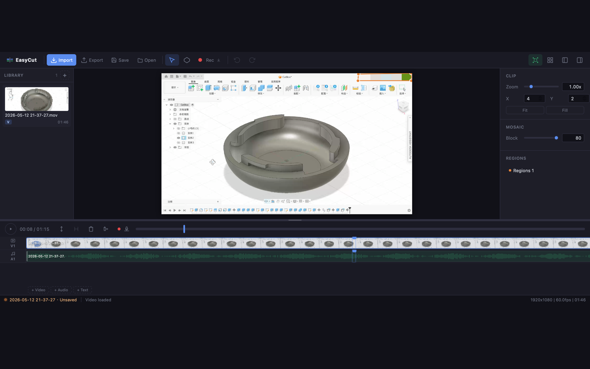

视频剪辑 · macOS · App StoreVideo editing · macOS · App Store
FasCut迅影狐
凭本能剪辑。Cut by instinct.
空隙即删除 · 物理堆叠 · 钉住锁定Space erase · Physics stack · Pin to lock

腾狐科技工作室TengFox Studio
我是夜诗。一个人写代码，也在教 AI 写代码。做快而利落、凭本能就能上手的工具 —— 为人类，也为 AI。 I'm NightPoetry. I write code — and teach AI to write it too. Tools that are fast, sharp, and usable on instinct — for humans, and for AI.
一件给创作者，一件给写代码的人和 AI。都在追同一件事：让工具即时回应你的意图。One for creators, one for coders and AI — both chasing the same thing: tools that answer your intent the instant you express it.
视频剪辑 · macOS · App StoreVideo editing · macOS · App Store
凭本能剪辑。Cut by instinct.
空隙即删除 · 物理堆叠 · 钉住锁定Space erase · Physics stack · Pin to lock

编程语言 · 开源 · 反应式Language · Open source · Reactive
写入，即触发。Write, and it triggers.
连续绑定 := · 无毛刺一致 · 透明并发Continuous binding := · Glitch-free · Transparent concurrency
let price := 100 let count := 3 let total := price * count // 300 count = 5 // 写入一次// write once // total 自己变成 // total becomes 500 — 无需订阅 — no subscribe
从 AI Agent 到内网穿透，从叙事工具到教育游戏 —— 都是开源的。From AI agents to network tunnels, from storytelling tools to teaching games — all open source.
越用越强的持久学习 AI 编码 Agent：分层记忆置换（RAG → 精确层飞轮）+ 自研内核。A self-improving, persistent-learning AI coding agent: layered memory swapping (RAG → precise-layer flywheel) + a custom kernel.
通用内网穿透客户端，多隧道多端口、多平台。无需公网 IP 或域名。A universal reverse-tunnel client — many tunnels, many ports, cross-platform. No public IP or domain needed.
基于节点树的 AI 辅助小说创作工具，支持分支剧情、伏笔管理与多项目持久化。A node-tree AI writing tool for fiction — branching plots, foreshadow tracking, and multi-project persistence.
基于二值逻辑的 LLM 无限上下文记忆底座 —— 给大模型用的记忆操作系统。A binary-logic, infinite-context memory foundation for LLMs — a memory OS for large models.
Minecraft 联机代理 —— 通过中继服务器把局域网联机变成跨互联网联机。A Minecraft co-op proxy — turns LAN multiplayer into play-over-the-internet via a relay server.
英语教学模拟经营游戏 —— TRAE AI 创造力大赛参赛作品。An English-teaching business sim — a TRAE AI creativity-contest entry.
关于 · About
腾狐科技工作室，是一个人的一条船。造快、利落、有本能反应的软件。
TengFox Studio is a one-person ship. Software that's fast, sharp, and instinctively reactive.
白天黑夜都在写代码，也在琢磨怎么让 AI 写得更好。我在意的从来不是功能多，而是「手感」—— 工具应该像触摸玻璃一样，你一动，它就在。所以这里的每件作品，无论是给创作者的剪辑器、给开发者的语言，还是给 AI 的记忆底座，追的都是同一件事：让意图和结果之间，没有延迟。
Day and night I write code — and figure out how to make AI write it better. What I care about was never feature count, but feel: a tool should be like touching glass — you move, and it's already there. So every piece here, whether an editor for creators, a language for developers, or a memory foundation for AI, chases one thing: no delay between intent and result.
产品与开源的里程碑，倒序排列。Product and open-source milestones, newest first.
事件驱动的强类型反应式语言正式上线，带 LSP、格式化器与 VS Code 扩展的完整工具链。The event-driven, strongly-typed reactive language went live — with a full toolchain: LSP, formatter, and VS Code extension.
越用越强的持久学习编码 Agent —— 分层记忆置换 + 自研内核，让 AI 把经验真正沉淀下来。A self-improving, persistent-learning coding agent — layered memory swapping + a custom kernel, so AI actually retains experience.
直觉式视频剪辑面世：空隙即删除、物理堆叠、钉住锁定。第一款登陆 Mac App Store 的作品。Intuitive video editing arrives: space erase, physics stack, pin to lock. The first work to reach the Mac App Store.
通用内网穿透客户端 —— 多隧道多端口，一行命令把本地服务暴露到公网。A universal reverse-tunnel client — many tunnels and ports; expose local services to the internet in one command.
合作、反馈，或者就想说句你好 —— 留言会直接进我的收件箱。Collaboration, feedback, or just hello — your message lands straight in my inbox.
也可以直接邮件 Or email directly NightPoetry2025@outlook.com · GitHub